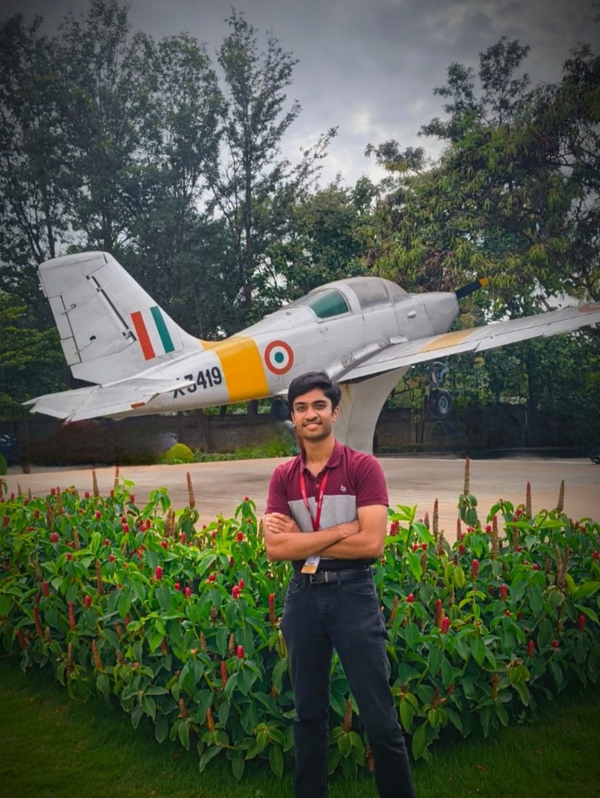

About me
A student of systems, a patient observer, and someone who enjoys finding the relationship between technical thinking and creative perspective.
I am a Computer Science engineering student with a strong interest in technology, aviation, and the continuous pursuit of knowledge. I enjoy exploring how complex systems work, learning new technologies, and developing skills that allow me to turn ideas into practical solutions.
Beyond computing and technology, aviation has always been a significant part of my interests. I am particularly fascinated by military aviation, aircraft design, aerodynamics, and the capabilities of modern fighter aircraft.
Photography is another important interest of mine, especially aviation photography and sky photography. I enjoy capturing aircraft, landscapes, and moments in the sky while combining my interest in aviation with a creative perspective.
I see myself as someone who is constantly learning, exploring new interests, and looking for opportunities to grow. Whether it is technology, aviation, photography, or something entirely new, I enjoy understanding things deeply and developing my abilities along the way.

Technology / observation / growth